Pokédex / #302
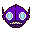
Sableye #302
DarkGhost
It hides in the darkness of caves. Its diet of gems has transformed its eyes into gemstones.
Generation 3 · Hoenn
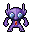
Stats
| Attack | 75 | |
|---|---|---|
| Defense | 75 | |
| Sp. Atk | 65 | |
| Sp. Def | 65 |
In the wild
| Wild level | 40–50 |
|---|---|
| HP | 50 |
| Experience | 10 |
| Egg groups | Human-Like |
Evolution
- Does not evolve.
Moves
| Level | Move | Type | Category | Power | Energy | Cooldown | Effect | |
|---|---|---|---|---|---|---|---|---|
| 1 | Tackle | Normal | Physical | 15 | 15 | 1s | Tackle is one of the most common and basic moves a Pokemon learns. It deals damage with no additional effects. | |
| 5 | Scratch | Normal | Physical | 40 | 40 | 6s | Scratch inflicts damage and has no secondary effect. | |
| 10 | Night Shade | Ghost | Special | 80 | 80 | 12s | Night Shade deals damage and has no secondary effect. | |
| 15 | Astonish | Ghost | Physical | 30 | 30 | 5s | The user attacks the target while shouting in a startling fashion. This may also make the target flinch. | |
| 20 | Fury Swipes | Normal | Physical | 18 | 45 | 9s | Fury Swipes inflicts damage, hitting 2-5 times per use. | |
| 25 | 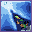 | Shadow Sneak | Ghost | Physical | 40 | 40 | 11s | Shadow Sneak deals damage and has no secondary effect. |
| 30 | 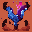 | Faint Attack | Dark | Physical | 60 | 60 | 9s | Faint Attack deals damage and ignores changes to the Accuracy and Evasion stats. |
| 35 | 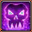 | Punishment | Dark | Physical | 60 | 100 | 20s | Punishment deals varying damage based on the opponent's stat increases. It starts at base power 60 and increases by 20 for every net stat boost of the opponent. |
| 40 | 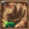 | Knock Off | Dark | Physical | 65 | 100 | 20s | The move does more damage if the target has a held item. |
| 45 | Confuse Ray | Ghost | Status | – | 50 | 9s | Confuse Ray causes the target to become confused. | |
| 50 | 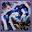 | Shadow Claw | Ghost | Physical | 70 | 70 | 16s | The user slashes with a sharp claw made from shadows. Critical hits land more easily. |
| 55 | Zen Headbutt | Psychic | Physical | 80 | 80 | 15s | Zen Headbutt deals damage and has a 20% chance of causing the target to flinch. | |
| 60 | 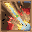 | Power Gem | Rock | Special | 80 | 90 | 16s | Power Gem inflicts damage and has no secondary effect. |
| 65 | 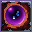 | Shadow Ball | Ghost | Special | 80 | 80 | 12s | Shadow Ball deals damage and has a 20% chance of lowering the target's Special Defense by one stage. |
| 70 | Foul Play | Dark | Physical | 95 | 105 | 20s | The user turns the target's power against it. The higher the target's Attack stat, the greater the move's power. |
Field abilities
CutRock SmashFlash
Special abilities
Keen EyeStall
Egg moves
Technical machines
Aerial AceBrick BreakCalm MindDouble TeamDream EaterFocus PunchPoison JabProtectPsychicRain DanceRestRock TombShadow BallShock WaveSubstituteTauntToxic
Drops
| Item | Amount | Chance | |
|---|---|---|---|
| black orb | 1 | 26.9% | |
| night orb | 1 | 8.97% | |
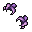 | cursed hand | 1 | 6.73% |
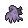 | reaper cloth | 1 | 5.98% |
| shadow orb | 1 | 5.38% | |
| cutting fang | 1 | 5.38% | |
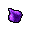 | essence of a bad dream | 1 | 5.38% |
| forbidden fruit | 1 | 5.38% | |
| onigiri | 1–5 | 5% | |
| dark claws | 1 | 4.49% | |
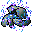 | grey-blue powder | 1 | 3.37% |
| dark crystal | 1 | 2.69% | |
| luminous orb | 1 | 2.69% | |
| astral source | 1 | 2.69% | |
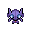 | sableye doll | 1 | 0.1% |
| Dread Plate | 1 | 0.025% | |
| Spooky Plate | 1 | 0.025% | |
| held black glasses | 1 | 0.01% | |
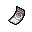 | held spell tag | 1 | 0.01% |
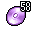 | TM 58 | 1 | 0.01% |